令人震惊的史前文明和外星人真相
远古文明和外星人方面的机密，这些事情有些大家听说过，但可能不知道具体是怎么回事，今天就来看看真相吧！
在月球上已经坠毁1亿年的巨型飞船，各国争相登月就是为了研究它，而阿波罗20号还将其中假死的女性飞行员带回研究。中国急于登月也是为了研究它。飞船500米高几公里长在谷歌月球上可以清楚看到。
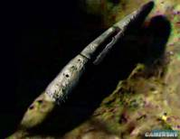
哈勃望远镜16年前发现的宇宙中的天国空间站，因为距离遥远，离我们有几亿光年当我们拍下这张照片的时候，他们已经过去几亿年了。
美国NASA老科学家冒死公布的几十年前发现的土星光环上停靠的外星战舰！长达50000公里！
而且光谱分析已经有上亿年的历史，50000公里什么概念，就是你从飞船的头开车开到飞船的尾需要一年时间，各国拼了老命也要研究土星就是冲它去的。
Lemuria大陆：NASA不允许外界公开的史前超文明大陆，距离我们已经有6500万年的历史，因为核战争而整个大陆消失，伴随他们而去的是恐龙的灭绝。
当年Lemuria的强大超过现在的美国，科技极度发达，因为和马尔戴克星的战争，最后太阳系第10大行星马尔戴克被毁灭而地球的。
Lemuria大陆沉入海底，具有核科技和较短的空间探索能力。
Maldek是传说中存在于火星和木星之间的一颗行星，后来发生爆炸而形成了如今的小行星带。

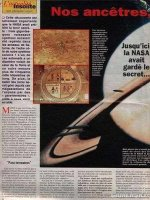
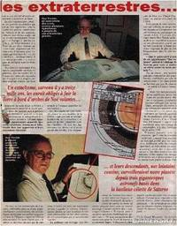
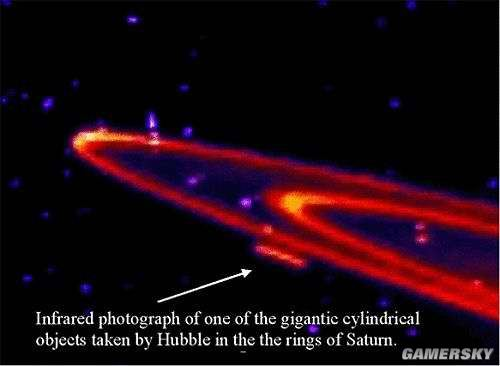
1766年德国天文学家提丢斯（J.Titius）偶然发现一个数列：(n+4)/10，将n=0,3,6,12,……代入，可相当准确的给出当时已知行星的轨道半径。
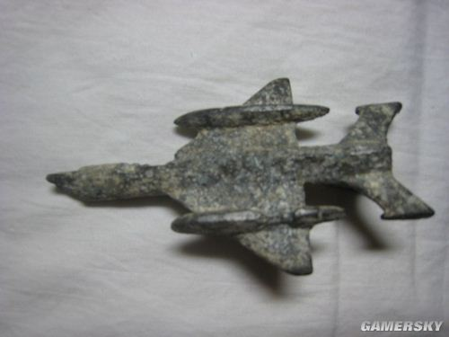这件事起初未引起人们的注意，后来柏林天文台的台长波德（J.Bode）得知后将它发表，乃为天文界所知。
在1781年发现天王星之后，進一步证实公式有效，波德于是倡议在火星和木星轨道之间也许还有一颗行星。
当年玛雅人所供奉的他们星球的历法卓锦历就是这个Maldek的历法。科技比现在的美国稍微强大些，根据爬行生物進化而来。后因为和Lemuria的战争而星球毁灭，掌握水晶科技。
当时只有该星球最上等的几十个人乘坐飞船来到了地球,就是玛雅人。
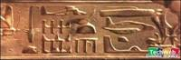
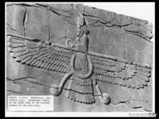
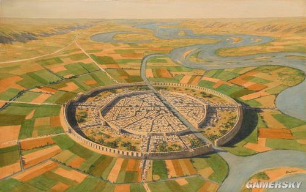
NASA证明但是不敢公开地心是中空的内部还有一个太阳而里面也有几个国家但是他们不想公开自己他们就是魔国，就是我们经常说的魔鬼，地下的魔鬼。同样是根据爬行类动物進化的，巨大的入口在南北极。文明比较落后但是确实真是纯在的。
地球内部是空心的，藏传佛教传说中的“香巴拉”，又译为“香格里拉”，其意为“极乐园”，是佛教所说的神话世界，为时轮佛法的发源地;香巴拉不是一个虚构的世外桃源，香巴拉就在地心。
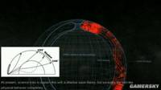
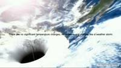
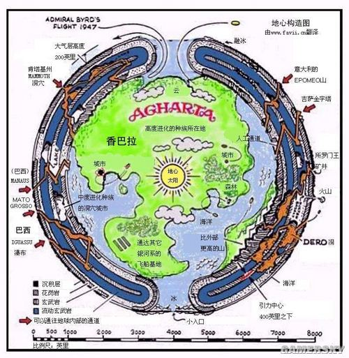
世界上大科学家大部份都知道但是不敢公开，会乱的那就是月球是某种文明制作的飞船。
NASA的阿波罗13号到过月球内部，发现其是一个超级文明让人惊叹的制造的巨型空间站，
月亮来历不明，它有那么多令科学家不解的谜团：为什么月球背面的环形山密密麻麻，而正面却平坦如镜？为什么环形山不论大小深浅都一样？为什么说月亮好像一个中空体？为什么美国突然停止了“阿波罗”登月计划？
我们将月表岩石用“钾—氩测定法”测定后发现，有的月表岩石竟然达70亿年。在“阿波罗”12号飞船带回来的岩石中，有两块岩石的年龄高达200亿年，而这200亿年相当于地球年龄的4倍。
科学家认为，这是我们宇宙中所发现的最古老的东西，因为我们现在所知宇宙的年龄其上限也不超过200亿年。那也就是说，月球不但比地球、太阳更古老，它几乎与宇宙同龄。在宇宙的某一个区域里，居住着比我们地球文化不知高出多少倍的高级智慧生命，他们出于某种目的，使用了某种技术，将一颗小行星的内部挖空，改造成一艘巨大的宇宙飞船，经过漫长的岁月，穿越了无数星系，才来到了我们太阳系。
火星文明
其实地球和火星是一个双子星，几亿年来在宇宙中的姊妹明珠，可以因为星际战争也变成了死亡之星。NASA每年几百亿的火星探索费用就是要找到它的史前超文明而得利。
美国宇航局的重大发现：火星上曾经存在高度发达的文明，但后来被毁灭了，根据“探索者”发回的图像及对部份样品的分析数据证实了科学家此前的猜想。
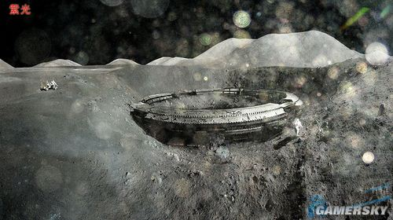
火星上也具有更为巨大的金字塔和几公里高的巨大人脸型建筑，而且狮身人面像像和城市非常多。地球上古代埃及就是火星当年唯一的生存者来到埃及后发展出来的埃及文明。
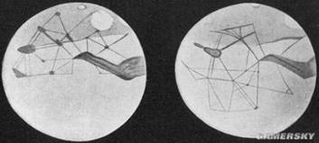

巨人族：
希腊神话中的泰坦巨人族其实在考古人员和高级科学家那里 根本不是什么传说 而是真正春纯在的事实。
古代巨人族在世界各地都有发现，他们和恐龙同一个时代，因为在白垩纪那是，很多动物都很巨大，所以当时的人类也非常巨大这样才能生存下来。
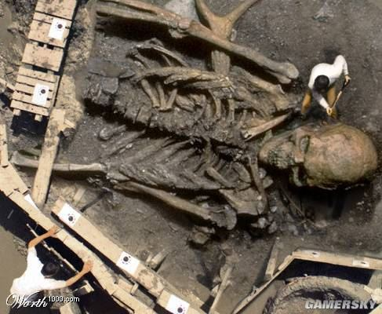巨人族确实存在过。1966年，印度生物学家在离德里一百一十六公里的地方，发现了酷似人类骨骼的骨头，其身长竟有四米，肋骨就长达一米。对这些骨头所做的科学鉴定证实，这是一百万年前的大型猿人骨骼。
看来似乎从一百万年前至距今数千年前的这段时间里，巨人族是一直存在着的。
十九世纪末，在马来半岛探险的一位学者，听说在半岛的腹地有巨人族，便前往调查。结果虽然未能见到巨人族，但发现了他们使用过的棍棒，一根棍棒好几个人都拿不起来。
目前在地球上还有不少文明人类的足迹尚未踏入的地方，比如茂密的原始森林，边远的高原和广袤的大沙漠。说不定将来哪一天，人们会见到这些尚未被人类所了解的巨人们。
还有，不靠种族遗传而由普通的父母生育出来的巨人也很多。让我们来翻阅一下历史资料吧。
公元1511年，一名巨大的男子被送到神圣罗马帝国马克西米里安一世那里。此人仅一顿饭就吃掉了一头小牛和一只羊。
现在他们生活在地底NASA都知道太阳系皮壳。因为几千万年前的马尔戴克和穆大路火星的战争。银河联邦在太阳系布置了防护网，简称太阳系皮壳NASA已经证实这个理论皮壳的作用是：外星人无法進入太阳系而太阳系中的飞船也无法出去。此举是为了避免战争。
地球上的望远镜可以看到银河系，可以望见夜晚星辰，但是太空船过了一百二十亿公里，往太阳系外观看却是一片漆黑。
除了往外看是一片漆黑，往内看也看不到太阳，因为太阳的光线无法传送到一百二十亿公里。至今已可确认一切的太阳系外影像，是经由虫洞口進入一百二十亿公里内，或者经过「太阳系皮壳望远镜」才看的到外面情况。
换言之，太阳系的三十亿到一百亿公里的地方有很大的学问，到达一百二十亿到二百五十亿公里，太阳风也会被阻挡在此处，成了鸡蛋壳，而这一个壳的厚度是七十亿公里，彷佛是一个超级巨大的望远镜片，只有在镜片内才能观看到太阳系外的风景。
至於太阳系的焦距在何处，目前还有待计算，而看到太阳系外的情景，是否随著所在位置的不同而有不同的情况，也有待验证。
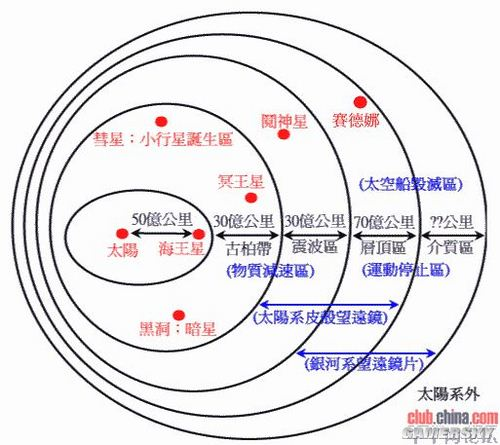
记住你在空间站照片和登月照片中是看不到任何行星的。
1969年登月回来后，由於在月球上看不到星星，美国军方立即列入最高机密，且列入机密教育课程，开始动员所有的人力去计算前往探测太阳系皮壳的计画，於1972年开始進行一系列的探测任务。
其中阿姆斯特朗回来后立即得到忧郁症并且接受心理治疗。他一直对NASA很不谅解，因为他认为不该欺骗全世界的人。
亚特兰蒂斯文明
根据玛雅历法的预言传说，地球人类所生存的世界，共有五次毁灭和重生周期——每一周期即所谓的“太阳纪”，并认为在每一纪结束时，都会演一出惊心动魄的毁灭悲剧。
第四个太阳纪是宗德里里克Tzontlilic（亚特兰蒂斯文明），又称光的文明，是继承上一个文明。这里用继承，不用延续是因为，亚特兰蒂斯是来自猎户座的殖民者。
他们拥有光的能力使火雨的肆虐下引发大地覆灭。早在利莫里亚文明时期亚特兰蒂斯就建立了。后来这两个文明之间还打核战争。
亚特兰蒂斯[1]（Atlantis, ?τλαντ??），又译阿特兰蒂斯，在梵蒂冈城**存的古代墨西哥著作抄本（即《梵蒂冈城国古抄本》）和存留至今的墨西哥合众国的印第安文明的作品中，也有过类似的叙述：“地球上曾先后出现过四代人类。第一代人类是一代巨人，他们毁灭于饥饿。
第二代人类毁灭于巨大的火灾。第三代人类就是猿人，他们毁灭于自相残杀。后来又出现了第四代人类，即处于“太阳与水”阶段的人类，处于这一阶段的人类文明毁灭于巨浪滔天的大洪灾。
现代科学发现，在大洪灾之前，地球上或许真的存在过一片大陆，这片大陆上已有高度的文明，在一次全球性的灾难中，这片大陆沉没在大西洋中。
而近一个世纪以来，考古学家在大西洋底找到的史前文明的遗迹，似乎在印证着这个假说。在民间的说法中，人们把这片陆地叫做“大西洲”，把孕育着史前文明的那个国度叫做“大西国”。
其实，科学界早就给这片神秘消失的大陆命名了，那就是沿用了柏拉图提出的名字：亚特兰蒂斯。亚特兰蒂斯的建筑成同心圆状，互相用舰只分隔开。随着越来越深入，身份限制也越严格。
在圆环内圈是最重要的庙宇和保留地。城市的建筑美妙地让人感受到了音乐的韵味。镀金的圆屋顶，由于风力和温度的不同，会发出和谐的声音。
通常是三个音节。对于亚特兰蒂斯来说，三是它的重要特征之一，就是线条会重复三次，建筑群由三组类似的建筑组成，三个金字塔组成的塔群。
三叶虫上的鞋印
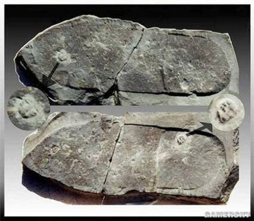一九六八年的一个夏天，一位美国的业余化石专家在位于犹他州附近，也是以三叶虫化石闻名的羚羊泉敲开了一片化石。这一敲不但松动了一百多年以来现代人类所笃信的進化论，更替人类发展史研究敲开了另一扇门。
这位名叫威廉·J·米斯特的美国人在敲开这片化石之后，赫然发现一个完整的鞋印就踩在一只三叶虫上，这个鞋印长约二十六公分，宽8.9公分。
从鞋印后跟部份下凹1.5公分来看，这应该是一双和现代人类所穿的便鞋类似的鞋子，也就是说这只鞋子的主人是生活在一个有一定文明下的环境。
令人纳闷的是，三叶虫是一种生长于六亿年前至二亿多年前的生物，换句话说，在这久远的历史时期之前，是不是有着和我们一样的人类文明存在？
在一八五一年的《科学美洲》中曾刊载在马萨诸塞州的一场岩石爆破中，发现了一个精致的金属花瓶，据估计有100万年历史。
1879年，英籍考古学家韦斯在埃及东北部荒芜沙漠中的Abydos古庙（Abydos temple）遗址内的浮雕壁画中，发现一个奇怪现象，就是看见与现今飞机形状极之相同的浮雕，以及一系列类似飞行物体。
有一图案状似今日直升机，有图案状似潜艇或飞船，甚至还有“UFO” 却出现于三千年前的古埃及。
还有至少三至四个飞行物与今日的飞机形状极为相同，飞机在十九世纪才开发，但竟然在三千年前的古埃及的壁画中出现。
在世界历史中，不少远古民族在发展语言和文字之初，均以壁画记载历史。出现在庙宇中的浮雕，也应该是古埃及人用以记载某一件事或表达某一种意思，但三千年前的人可以预言到今日的文明产物吗？
在三千年前，即使是外星文明曾经降临过古埃及，当时的人亦未必有直升机和潜艇这些概念。并且，如果壁画内的“UFO”是外星人的，又为何要与现代文明的飞机画于同处?
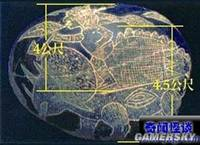
在发现"纳斯卡线条"隐藏巨型图案的消息公布后，即引起了世界各地的专家前往展开研究工作。专家们发现大部份的线条和图形，都分布在秘鲁南部一块完整地域上，北由英吉尼奥河（Rio In间enio）开始，南至纳斯卡河（Rio Nazca），面积达二百平方英里。
由于图案十分巨大，只能在300米以上的高空，才能看到图案的全貌，所以一般人在处于地面的水平角度上，只能见到一条条不规则的坑纹，根本无法得知这些不规则的线条，所呈现的竟是一幅幅巨大的图案。
根据研究人员的发现，这些图案是将地面褐色岩层的表面刮去数公分，从而露出下面的浅色岩层，而所形成的坑道线条，每条的平均宽度约为10至20公分，而当中最长的则达约10公尺。
所以由这些长度不一的线条所组成的图案，其面积也有所不同，例如其中的一幅动物图案就长达二百公尺。
不少科学家推断纳斯卡线条产生于公元一世纪，并认为是当时的纳斯卡人活动成果。
但从纳斯卡线条的宏大、复杂程度来看，考虑到当时纳斯卡人的技术水平，这一推论相当站不住脚。
薄法平先生指出“这些巨大的、令人惊诧莫名的文明遗迹，显然并非几千年前的奴隶们所为”，“这些遗迹只能归结为史前人出于某种需要而创造的”。（《人类的起源》第二十页，云南人民出版社）
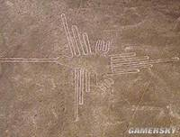
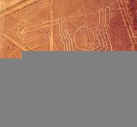
1936年6月盛夏的一天，在伊拉克首都巴格达城近郊格加特拉布阿村外，修建铁路的工程正在热火朝天地進行着。工人们挥动铁锹，铲除了一堆土丘。正准备铺设路基，偶然发掘出一座用巨大石板。
巴格达电池砌成的古代陵墓，石板上刻有许多波斯文字。工人们继续向下挖下去，此时竟挖出一个巨大的石板砌成的古代石棺。
施工暂时停止了，伊拉克博物院的考古学家们立即赶来。原来这座石棺是一座陵墓的定居点的一部份，而墓的历史时期就是安息时期（约公元前250-公元225年）。
两个月过去了，巨大的石棺终于打开了，从中发现了大量公元前248年至226年古波斯时代的文物。但是，其中最令考古学家惊讶的不是613颗珍珠组成的捻珠和大量金银器，而是一些铜管、铁棒和陶器。
“这些小型铜管、铁棒和陶器为何同金银器等贵重物品一起殉葬？它们有什么用途？”当时担任伊拉克博物馆馆长的德国考古学家瓦利哈拉姆·卡维尼格围着这些出土文物百思不解。
于是，他立即组织力量，对这些铜管、铁棒和陶器進行研究和鉴定。不久，他宣布说：“我们发现了一个异常奇特的文物，其中有一个陶器，高15厘米，形似花瓶，呈乳白偏黄色，边沿已经破碎，上端为口状，瓶里装满了沥青。
沥青之中，埋有一根铜管，直径2.6厘米，高9厘米。铜管内有一层沥青，包着一根铁棒。铁棒上高出铜管1厘米，高出的部份虽布满铁锈，但个别地方却有一层灰色偏黄的物质，看上去好像是一层铅。铁棒下端，则塞有3厘米高的沥青，使铁棒同铜管相隔离。”
此后不久，经过化学鉴定，卡维尼格宣布了一个惊人的消息：“这些出土的铜管、铁棒和陶器是一个古代化学电池，只要向陶瓶内倒入一些酸或碱性水，便可以发出电来。”
这意味着，在公元前248年至226年之间，居住在这些地区的波斯人就开始使用电池了，而公元1800年世界著名物理学家伏打发明的世界第一个电池则是在这些古电池的基础上发明的现代电池。
人类的起源之谜之五次史前文明
根达亚文明，（超能力文明）1米左右，男人有第三只眼，翡翠色，功能各有不同。有预测的，有杀伤力的等等。
女人没有第三只眼，所女人害怕男人。但是女人有能神的能力，女人怀孕前会与天上要投生的神联系，谈好了，女人才会要孩子。此文明毁于大陆沉没
米索不达亚文明（饮食文明）这个文明是上个文明的逃亡者的延续。但是人们把以前的事忘却了，超能力也惭惭清失了。男的第三只眼开始清失。他们对饮食特别愛好，发展出各色各样的专家。这次文明在南极大陆，毁于地球磁极转换。
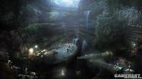穆里亚文明（生物能文明）上个文明的逃亡者的延续，他们的先祖开始注意到植物在发芽时产生的能量，这个能量非常巨大，经过一个世纪的改良发明了利用植物能的机戒，这个机器可以放大能量，该文明毁于大陆沉没。
亚特兰缔斯文明（光的文明）继承上个文明，这里用继承，不用延续是因为，亚特兰缔斯来自猎户座的殖民者。他们拥有光的能力。早在穆文明时期亚特兰就建立了。后来这两个文明还打核战争。
挪威星门
挪威曾出现的螺旋光圈，是美国在去年12月進行的量子通信实验的尾声。12月8日傍晚，欧洲核子研究中心CERN在瑞士的大型强子对撞机，用人类目前最高的2兆3600亿电子伏特能量，成功破坏了构成原子的粒子。
随后，通过美国Haarp以及欧洲EISCAT雷达的作用，在负责加热电离层的科学家的操作下，向设置在挪威Ramfjordmoen的巨大的部份反射中波（MF）大气雷达基地，传送了“量子“。
随后，MF雷达天线用2.43MHz的脉冲电流，将传送”量子“的高能光线垂直送上挪威上空，穿越超高层（地外）大气层。这一过程即为被目击的螺旋光圈。
由于国际压力强烈要求不再重复進行这个实验，美国将实验环境从CERN转移到了费米研究所复合体，并设置了世界第二大大型粒子加速器。
报告中指出，关于交互多维-空间通信项目的一个重要性就是“crop circle component“（麦田圈构成）。
通过这个项目，实现了”量子移动“（4月23日，费米研究所的粒子加速器成功地向美空军最高机密X-37B宇宙飞机進行了量子移动。根据Beloyvan博士的最后报告，这个实验随后又再次成功实施）。
量子移动实验在5月5日得到了回应-即表现为人类最古老”带翼的使者“winged messenger的麦田圈。
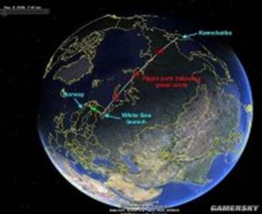
亚丁湾星门
2010年11月14号开始至15号上午11时，亚丁湾连续发生62次地震，此次事件引起了各国的高度注意，纷纷派遣海军舰艇前往事发地点進行调查，但向外界透露理由为消灭索马里海盗。有网友传言此次事件其实为位于亚丁湾的星际之门打开所造成。
美国海军：第5舰队（并没有按照航空母舰战斗群的序列出兵，以下即为参战序列）；核动力航空母舰一艘(CVN-65 企业号航空母舰，属于美国企业级核动力航空母舰）；宙斯盾巡洋舰一艘（CG-68安其奥号，属于美国提康德罗加级巡洋舰）；驱逐舰一艘（DDG-95詹姆 斯E·威廉姆斯号，属于美国阿利·伯克级驱逐舰）；
美国海岸警卫队：海岸警卫艇一艘；美国各舰队辖区辖有以下编制：第50任务部队（Task Force 50, TF50）— 战斗部队；第51任务部队（TF51）— 水陆两用群；第53任务部队（TF53）— 兵站部队；第54任务部队（TF54）— 潜水舰部队；第57任务部队（TF57）— 哨戒侦察部队；第58任务部队（TF58）— 海上临检部队；第59任务部队（TF59）— 远征部队/特别应对部队；
加拿大海事指挥部：护卫舰一艘；丹麦皇家海军；德国海军：护卫舰一艘；西班牙海军及空军：驱逐舰一艘；
意大利海军：护卫舰一艘；瑞典海军：多用途支援舰一艘（该舰类别应为驱逐舰）；
土耳其海军：护卫舰一艘；
英国皇家海军：22型护卫舰一艘；
法国海军：护卫舰一艘；
韩国海军：4500吨级配备导弹的“姜邯赞”号驱逐舰；
马来西亚皇家海军：护卫舰一艘；
俄罗斯海军：驱逐舰一艘、32辆坦克；
澳大利亚皇家海军：护卫舰一艘；
新西兰皇家海军：护卫舰一艘；
巴基斯坦海军：护卫舰一艘；
日本海军：补给舰两艘；
印度海军：克里瓦克级护卫舰一艘、塔巴尔号隐形巡防舰（最神秘的武器）；
中国海军：09年先派海口号导弹驱逐舰、武汉号导弹驱逐舰、微山湖号综合补给舰，后加派深圳号导弹驱逐舰、黄山号导弹护卫舰。最后派遣东海舰队及昆仑山号两栖船坞运输舰（排水量18500吨、是全国最大吨位的作战军舰）。
欧洲核子研究中心(CERN)2010年3月30日宣布，跨越日内瓦市郊，瑞士、法国边界的大型强子对撞机(Large Hadron Collider，简称LHC)上，总能量为7万亿电子伏特的两个束流对撞，在发生两次故障后最终获得成功。这是世界上目前能量最高的对撞。时空之门正式开启。这次的星门是自动打开的，而不是人为，地球正在打开多个星门，太阳系其它星球也一样。各国政府想阻止星门启动，但是没有办法，星门启动后以迎接地球新的变化亚丁湾事件似乎很玄幻。
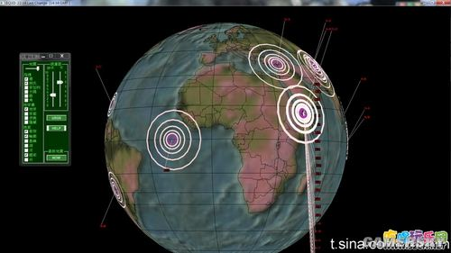可谁又能准确的道出其中的缘由呢，纵观整个宇宙，地球不过是无数个银河系中微小的一粒尘沙，而人类更是微乎其微，在我们身边无时不刻都发生着让人难以解释的现象，终究有一天，我们能解释出其中的奥妙，探索宇宙的秘密，也许亚丁湾正好是一个开端。